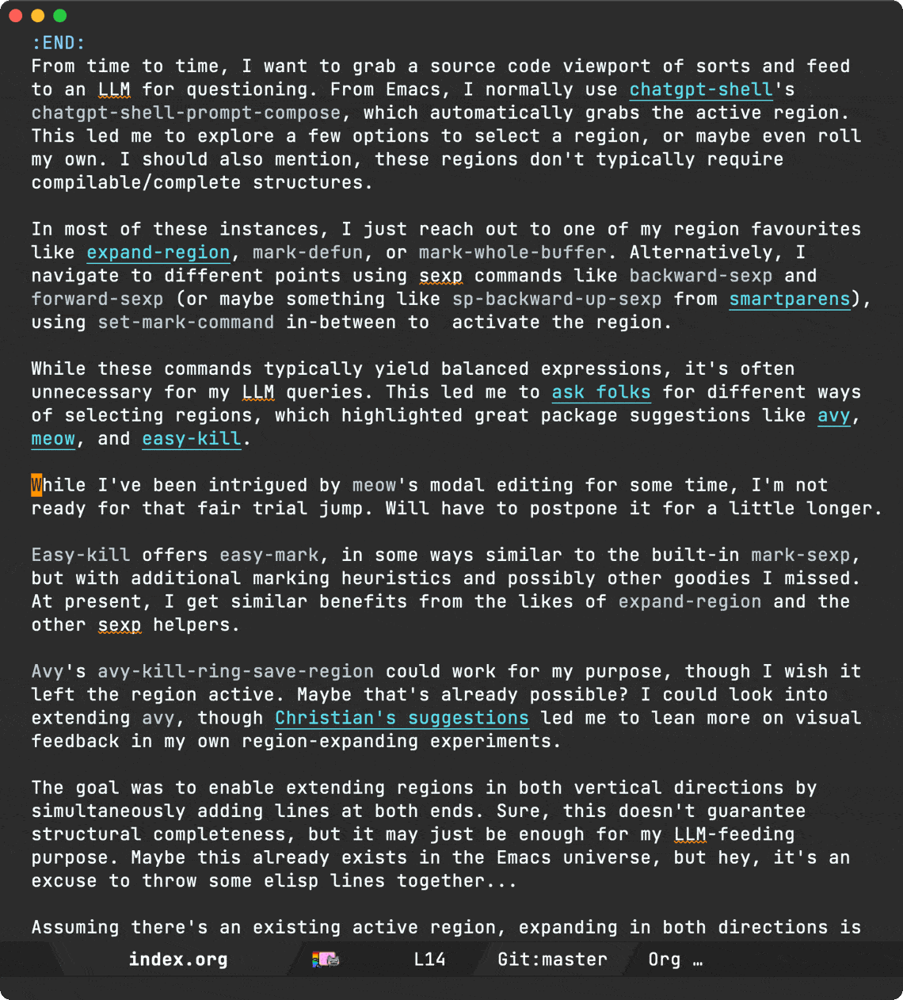
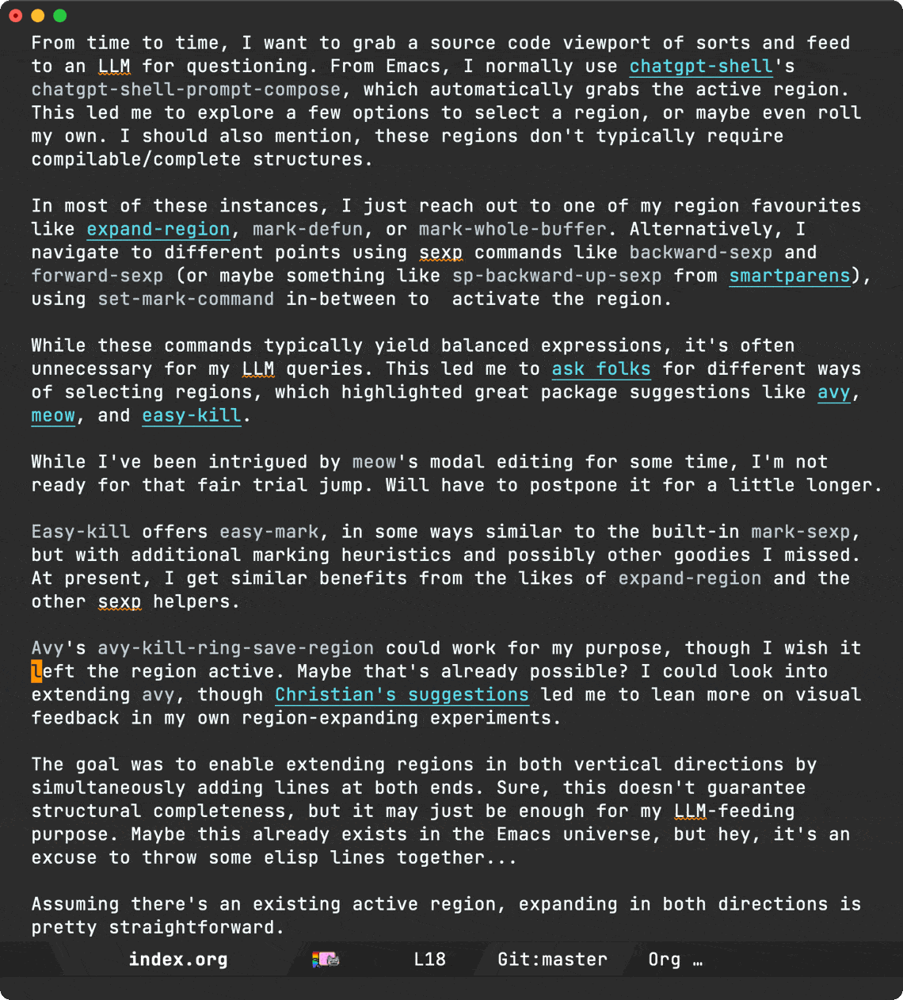

Álvaro Ramírez
Emacs bubble mode
From time to time, I want to grab a source code viewport of sorts and feed to an LLM for questioning. From Emacs, I normally use chatgpt-shell's chatgpt-shell-prompt-compose, which automatically grabs the active region. This led me to explore a few options to select a region, or maybe even roll my own. I should also mention, these regions don't typically require compilable/complete structures.
In most of these instances, I just reach out to one of my region favourites like expand-region, mark-defun, or mark-whole-buffer. Alternatively, I navigate to different points using sexp commands like backward-sexp and forward-sexp (or maybe something like sp-backward-up-sexp from smartparens), using set-mark-command in-between to activate the region.
While these commands typically yield balanced expressions, it's often unnecessary for my LLM queries. This led me to ask folks for different ways of selecting regions, which highlighted great package suggestions like avy, meow, and easy-kill.
While I've been intrigued by meow's modal editing for some time, I'm not ready for that fair trial jump. Will have to postpone it for a little longer.
Easy-kill offers easy-mark, in some ways similar to the built-in mark-sexp, but with additional marking heuristics and possibly other goodies I missed. At present, I get similar benefits from the likes of expand-region and the other sexp helpers.
Avy's avy-kill-ring-save-region could work for my purpose, though I wish it left the region active. Maybe that's already possible? I could look into extending avy, though Christian's suggestions led me to lean more on visual feedback in my own region-expanding experiments.
The goal was to enable extending regions in both vertical directions by simultaneously adding lines at both ends. Sure, this doesn't guarantee structural completeness, but it may just be enough for my LLM-feeding purpose. Maybe this already exists in the Emacs universe, but hey, it's an excuse to throw some elisp lines together…
Assuming there's an existing active region, expanding in both directions is pretty straightforward.
(defun bubble-expand() "Expand region." (interactive) (when (> (point) (mark)) (exchange-point-and-mark)) (forward-line -1) (exchange-point-and-mark) (forward-line 1) (exchange-point-and-mark)) (defun bubble-shrink () "Shrink region." (interactive) (when (< (point) (mark)) (exchange-point-and-mark)) (forward-line -1) (exchange-point-and-mark) (forward-line 1))
While I've yet to use this region-expanding approach long enough to validate its usefulness, it sure is fun to play with it.

This got me thinking, what other funky things I could do with the region? Could I shift the region selection like a viewport of sorts? As you now expect, the answer in Emacs is almost always of course we can…
(defun bubble-shift-up () "Shift the region up by one line." (interactive) (when (> (point) (mark)) (exchange-point-and-mark)) (forward-line -1) (forward-line 0) (exchange-point-and-mark) (forward-line -1) (end-of-line) (activate-mark) (exchange-point-and-mark)) (defun bubble-shift-down () "Shift the region down by one line." (interactive) (when (> (point) (mark)) (exchange-point-and-mark)) (forward-line) (forward-line 0) (exchange-point-and-mark) (forward-line) (end-of-line) (activate-mark) (exchange-point-and-mark))

My friend Vaarnan also suggested looking into UX around providing line count, which is possible by providing a prefix into bubble-expand-region.
C-5 M-x bubble-expand-region

These commands alone aren't as effective unless we have some key-bindings around them. I've tied things up into a minor mode, called… you guessed it: bubble-mode. Oooh, a mode, you may say it's now official ;) Well, no. It's still an experiment of sorts and currently lives in my Emacs config repo.
The key bindings I've chosen are:
C-c C-w: Enter bubble-mode.C-p: bubble-expand.C-n: bubble-shrink.S-C-p: bubble-move-up.S-C-n: bubble-move-down.Numbers 1-0: Expand 1 to 10 lines.RET: Exit bubble-mode.
Note: Inspired by expand-region, any other key binding/command automatically exits bubble-mode.
C-c C-w kinda works for me as C-c w is already bound to expand-region. Let's see if that sticks, though I may have to give up the org-refile binding.
So does it work for my original LLM intent? We shall see, but it seems to so far. You can play with it if you'd like (it's on github). Here's what that flow now looks like:

Enjoying this content? Using one of my Emacs packages?
Help make the work sustainable. Consider sponsoring. I'm also building lmno.lol. A platform to drag and drop your blog to the web.